LanceMorrison
I build apps, films and characters. This is a flight through what I've made so far.
Sector 1
Products
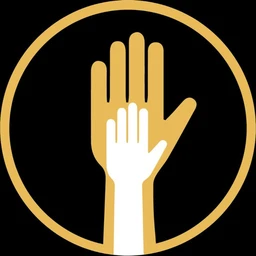
Represent
A civic voting app where verified people answer real local questions between elections.
Everyone is ID-verified, so it's one person, one ballot. Cities, organizations and neighbours ask, and the results are public. It's live on the App Store in Canada.
- Platform
- iOS, Android, web
- Stack
- Expo, Express, Postgres
- Status
- Live in Canada
TITΛN
A strength-training log on the App Store. One SwiftUI codebase ships two brands.
Log a set in one tap, catch every personal record, see the week's volume on a muscle map, and climb the ranks from Bronze to Titan. VALKYRIE is the same app in a second skin.
- Platform
- iOS, SwiftUI, SwiftData
- Released
- August 2026
- Promo films
- Remotion
Distill
An AI research agent that turns a pile of customer reviews into ranked product decisions.
It reads every review, clusters the complaints, ranks the opportunities and writes a brief where every claim cites the reviews behind it. The pipeline streams live while it works.
- Reviews in
- 3,214
- Decisions out
- 6
- Precision on the golden set
- 81%
- Recall
- 82%
Contrail
A free, live flight tracker for the whole planet, built on open ADS-B data.
Follow any flight with its route and altitude profile, search by airline or tail number, check an airport's runways and weather, or switch to Overhead and see what's flying above you right now.
- Stack
- Next.js, MapLibre GL, deck.gl
- Data
- Open ADS-B feeds
- Views
- Map, overhead, airports
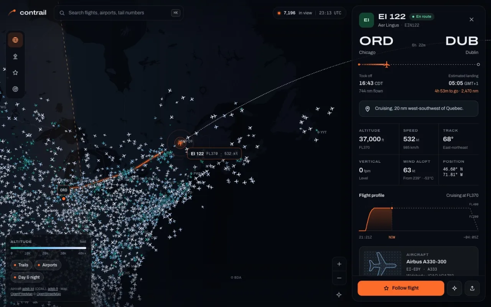
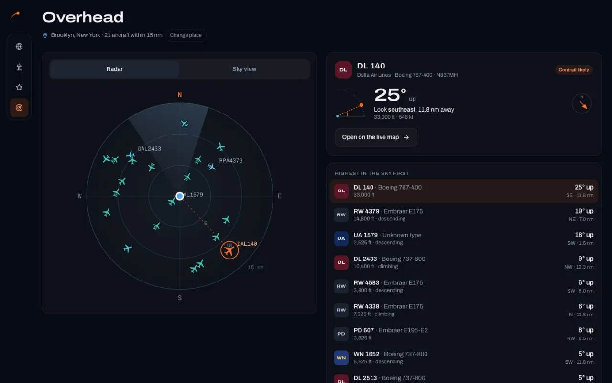
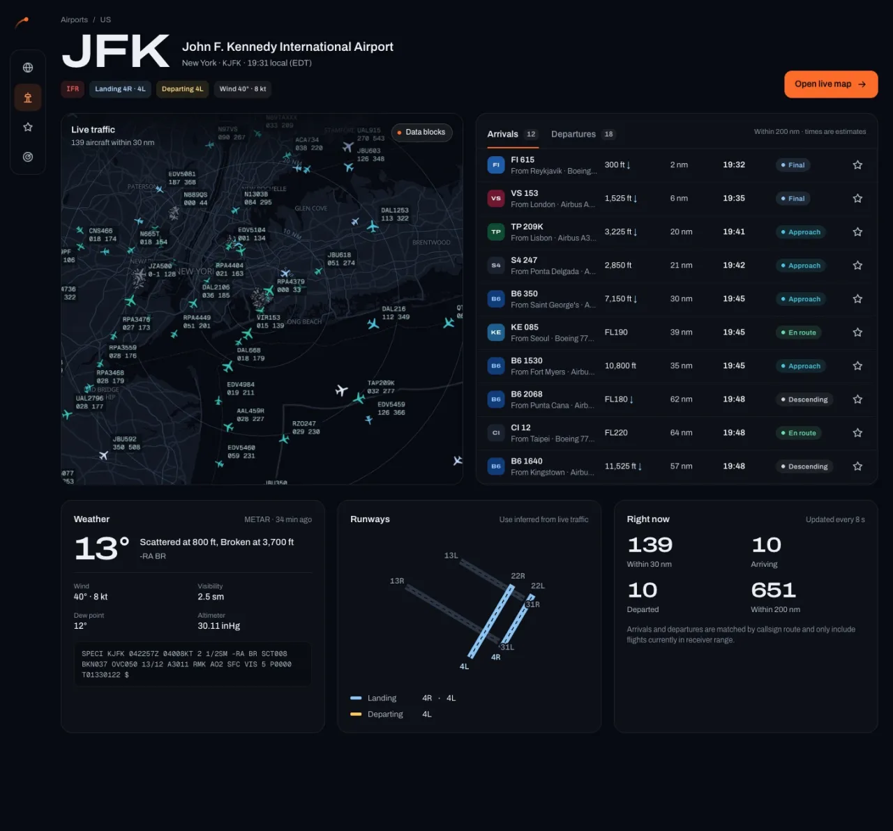
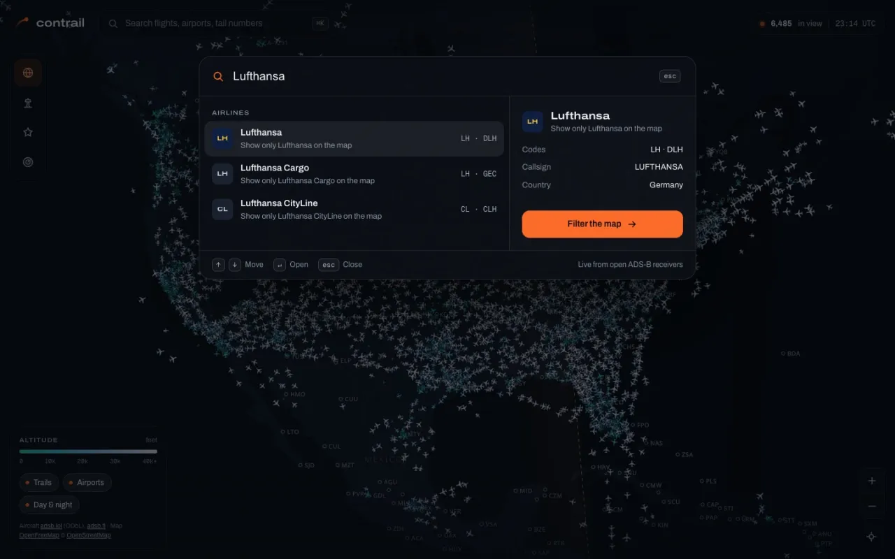
Sector 2
Films and characters
Nova
The navigator you've been talking to. A Live2D character with a motion rig I wrote for the browser.
Her model started as 23 flat layers. I re-meshed it into an 86,000-point grid and added head turns, eye tracking, blush, and physics for her hair. She runs live in WebGL right here.
Mood
Move
A 90-second idol anime opening for a group that doesn't exist yet.
Four members, 41 scenes and 11 motion clips, cut to the song by a canvas engine I wrote. Lyrics run in romaji and English, timed to the vocal.
- 天野ここな Kokona
- 月島レイ Rei
- 桜庭みみ Mimi
- 夏目ナギ Nagi
月明かりを纏って
Tsukiakari wo matotte
A gothic anime opening. In English, the title means "clad in moonlight".
Each character lights up the moment it's sung. I split out the vocal, aligned the lyrics to it one character at a time, then corrected the timing by hand. Every frame renders from the song's clock, so you can scrub anywhere.
Count Me In
A two-minute music video painted entirely by code.
A bristle-brush and watercolour engine paints every frame live in p5.js. The little Voicelings dance to kick and bass envelopes pulled from the song, so the whole film moves on the beat.
暁を斬れ
Akatsuki wo kire, "cut the dawn". The next opening: a knight, a heroine and a sky split between night and day.
46 keyframes so far. The edit comes next.
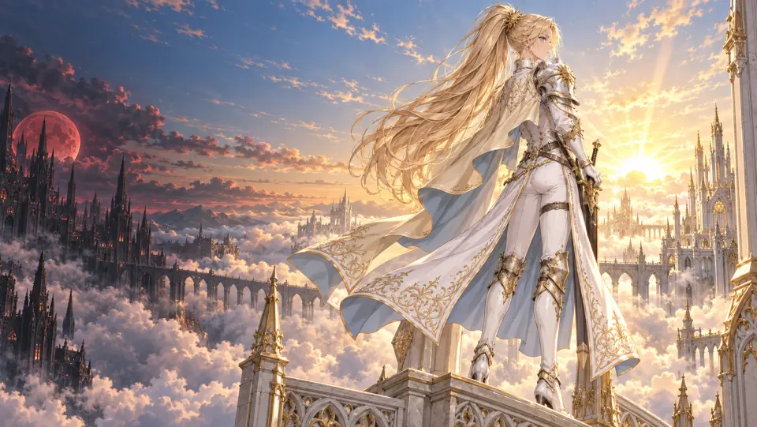
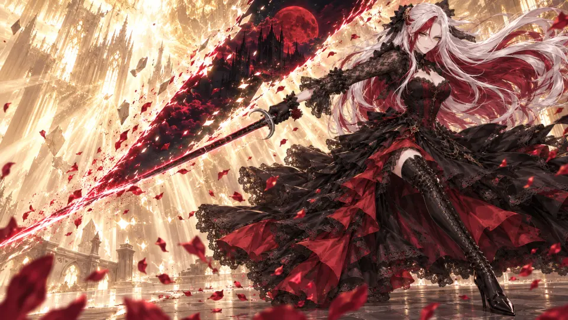
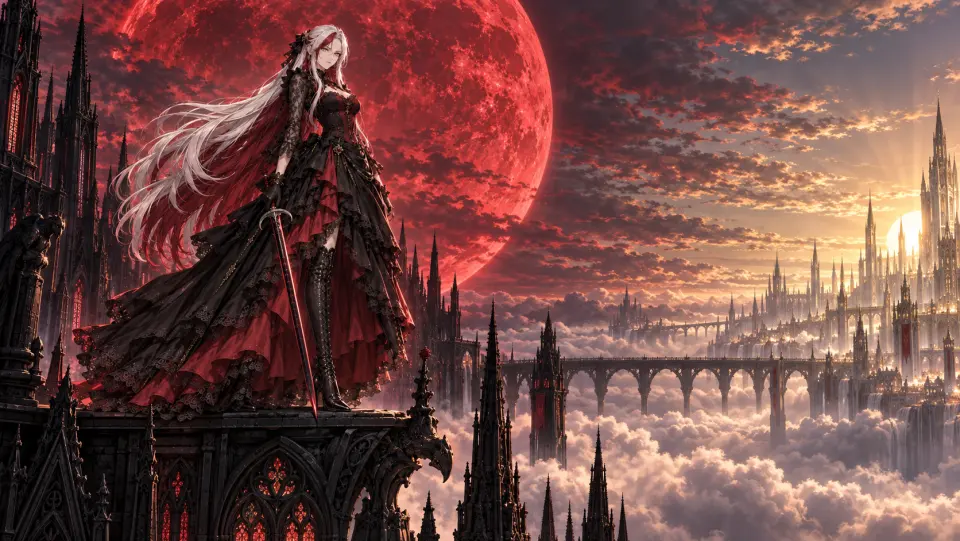
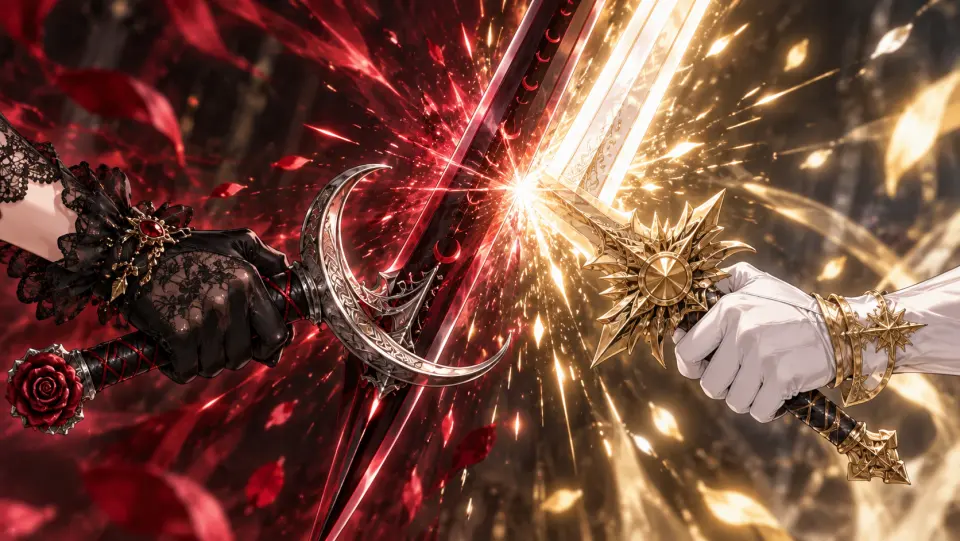
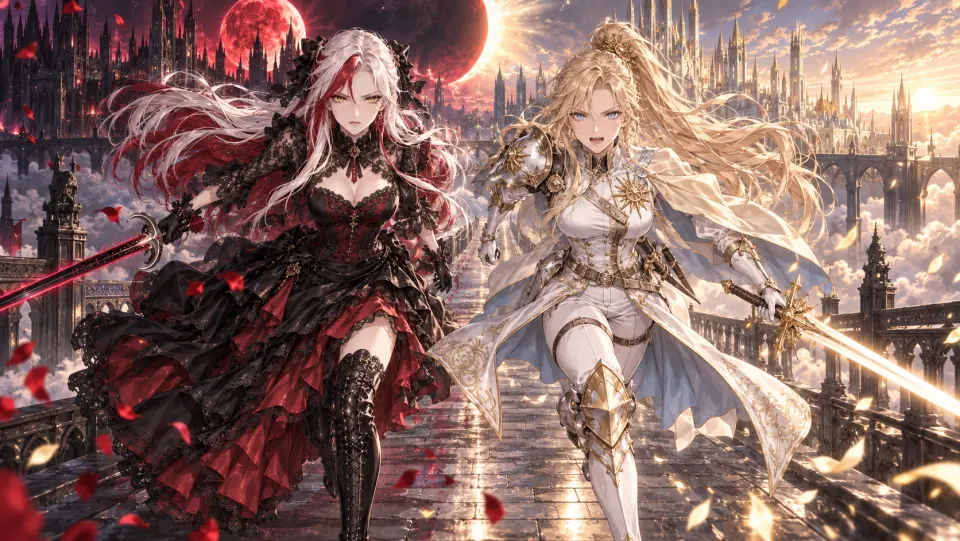
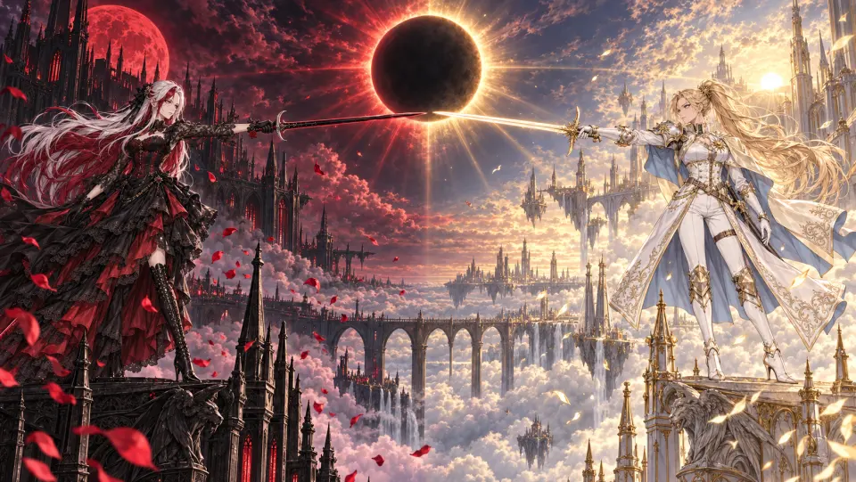
Sector 3
Prototypes
Radar
Lead finding for local businesses, with a bat who listens for people asking for what you sell.
Radar watches public posts, permits and bids, scores each signal, and drafts the reply. The landing page and app prototype are built around a Rive character who reacts to what you do.
More signals
-
Acorn
A token launchpad for Robinhood Chain with bonding curves, burned liquidity and creator fees you can claim on-chain.
Solidity, indexer, React
-
Carl
An iOS job-hunting assistant. It reads your résumé, finds roles that fit and prepares the applications.
SwiftUI, Node
GitHub -
Governance Literacy Library
A publisher site for six books on governance, with 3D covers and an audio player that highlights the transcript as it plays.
HTML, CSS, Web Audio
-
Sprout
A plant-care app concept. Every plant gets a nickname and a mood, and the mood is the reminder.
Product design
That's the edge of the map, for now.
New worlds are still forming. Follow them on GitHub.
Every work on this page runs in your browser. Nova's model uses Live2D Cubism Core under the Live2D Proprietary Software License.